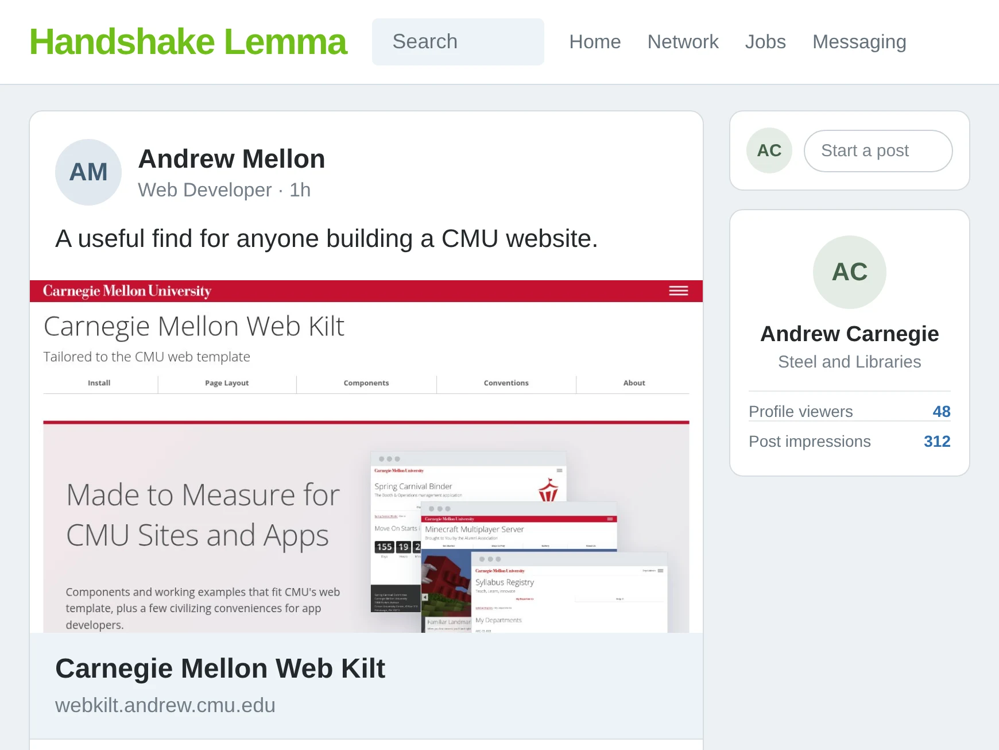
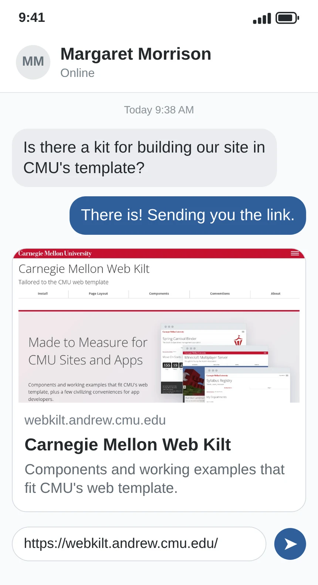

Put Your Best Page Forward
When someone shares your link in Slack, Teams or social media, its link preview is the first thing people see. FencePost shows you that preview and lets you fix the image and tags to get it right.


Get Started
A link preview is an image, a title and a description. To give your page a good one:
- Get the ImageA screenshot of the top of your page, 1200 ×
630 pixels, saved as a JPEG under 300 KB and hosted on your site (e.g.,
https://cmu.edu/nachos/images/). Take it yourself or let FencePost generate it.preview.jpg - Add the Tags
Include Open Graph tags that provide the page's title, description and address in the
<head>of each page.Using a CMS? The Web Kilt's guidance covers that.
- Check the LinkRun the link through the checker and fix any problems before you share it. Apps cache a link's preview for a while once it's shared, so fixes can take days to show.
Ready for Wherever Your Page Goes Next
Set Up With an AI Agent
Copy the prompt into an AI coding agent in your editor or terminal, and it sets up your site's link previews with FencePost.
Want to read it first? See the PromptHide the Prompt
Set up link previews for this site with FencePost. Read https://fencepost.andrew.cmu.edu/reference.html and the Web Kilt's standard at https://webkilt.andrew.cmu.edu/0/previews.html first. If you can connect MCP servers, add https://fencepost.andrew.cmu.edu/mcp and use its get_guide, check_link and generate_preview tools; otherwise use its API. FencePost works on public pages on cmu.edu or an approved Carnegie Mellon domain. Once the home page is published, make the site's preview image from it with generate_preview and save it as images/preview.jpg in the site's top folder. Add the Open Graph tags to the layout every page uses, filled in from each page's title, description and address, with the image's full address. Then run check_link on a few published pages and fix what it reports. Keep anyone's name or data out of the tags and the image.